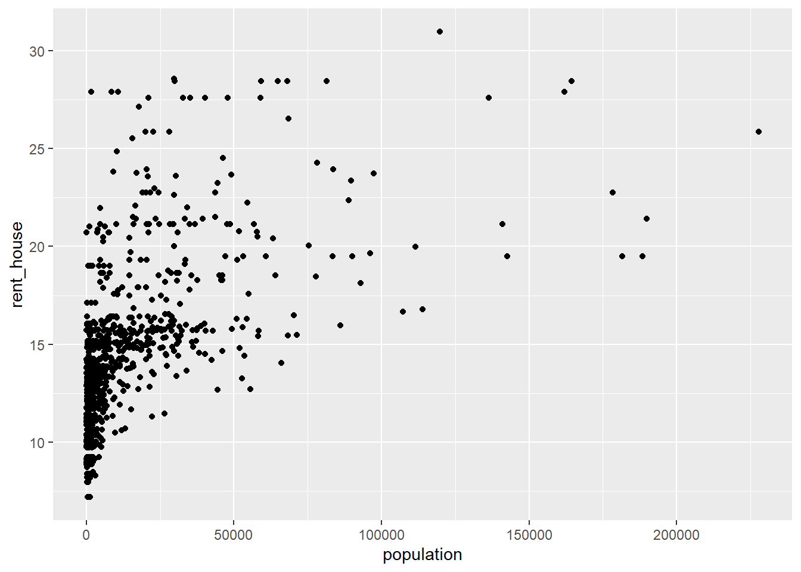
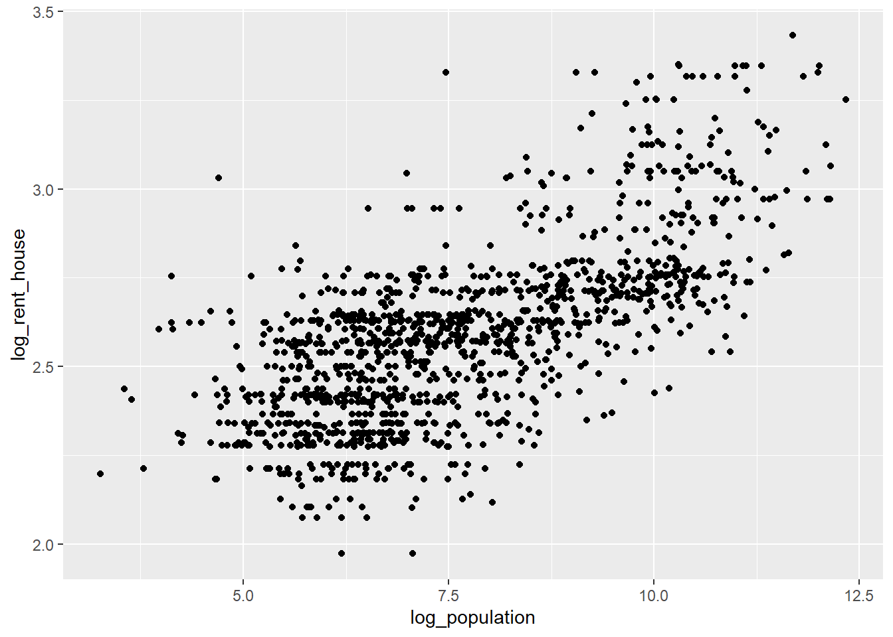
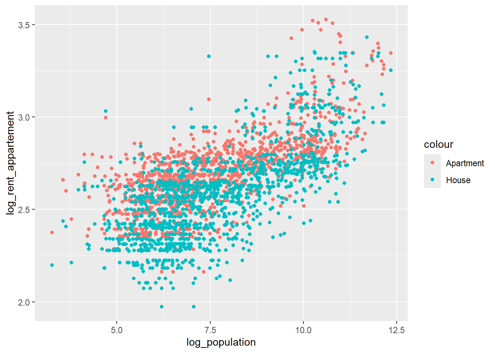
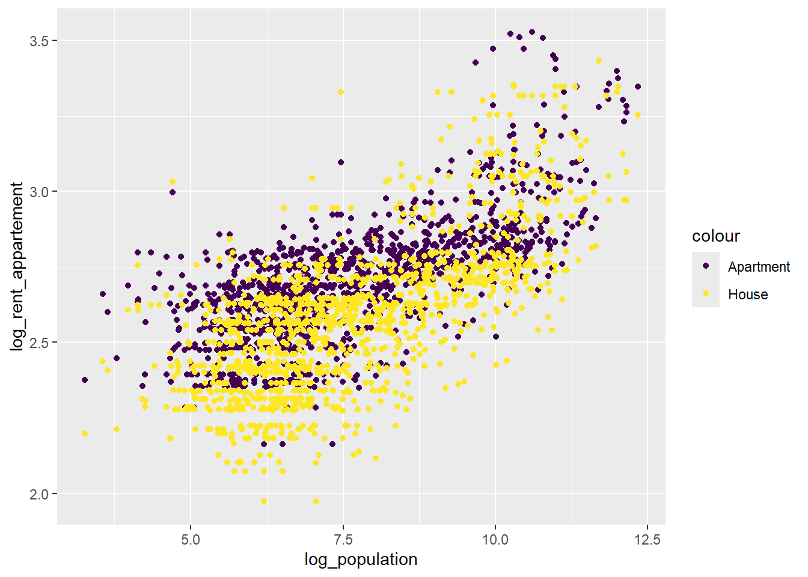
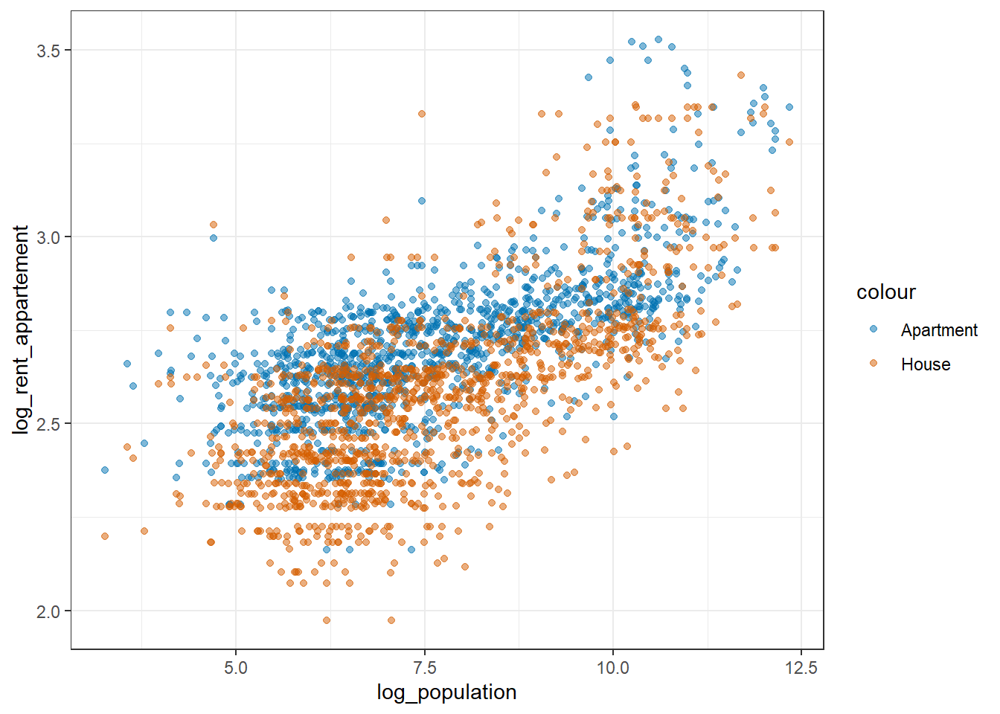
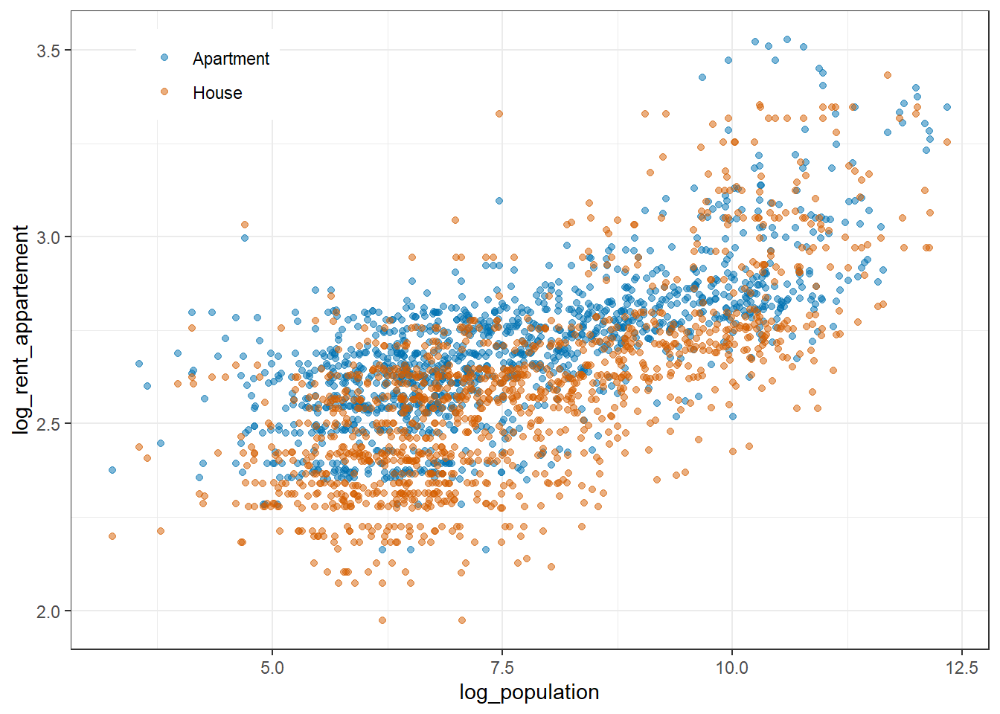
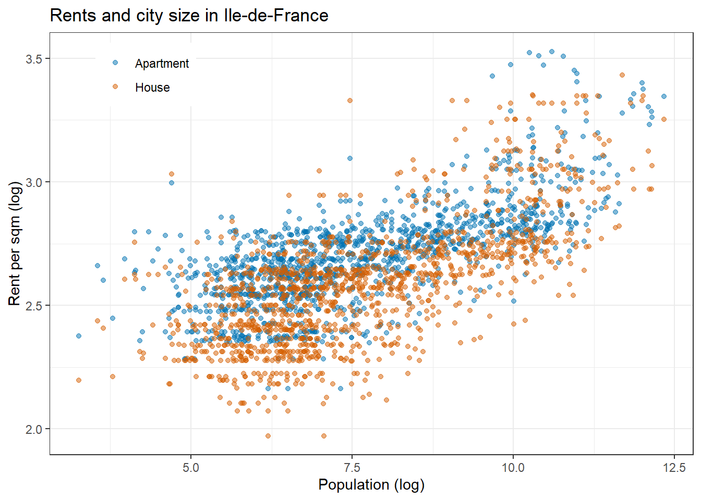
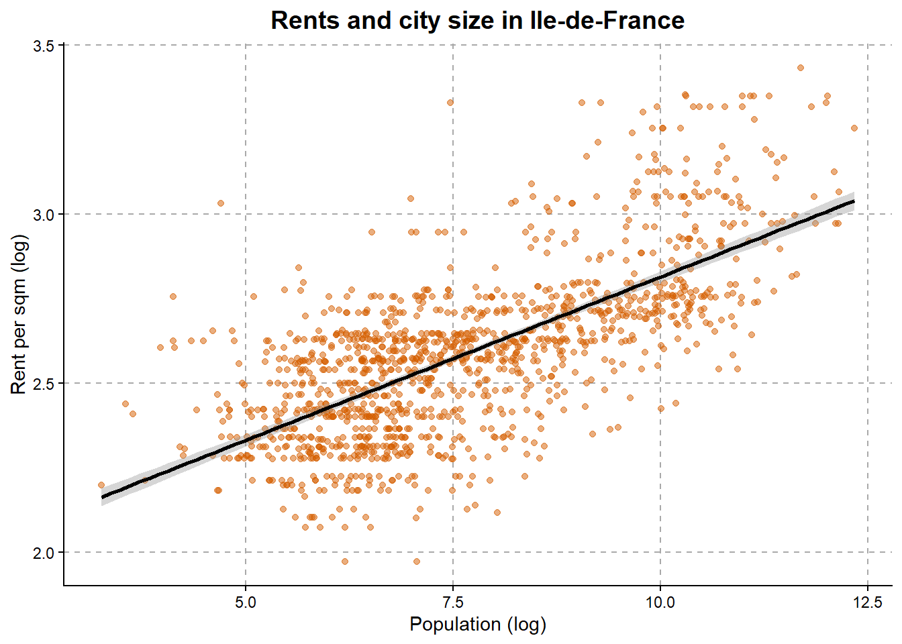

path = "C:/Users/mateomoglia/Dropbox/courses/polytechnique/2027_eco51432ep"
library(dplyr) # Data manipulation
library(ggplot2) # Make graphs
library(tidyr) # Reshape data
library(plotly) # Interactive graphs
library(sf) # Spatial data
# Open the data ----------------------------------------------------------------
# Data were created in Part 1 and saved under /temp/idf_data.csv
idf_data = read.csv2(paste0(path, "/temp/idf_data.csv")) %>%
mutate(log_rent_appartement = log(rent_appartement),
log_rent_house = log(rent_house),
log_population = log(population))Data visualisation
Roadmap
In this part, we are going to learn how to:
- Make appealing data visualisations with the
ggplot2package - Build a graph by layers, so that every element on it is there because you put it there
Plots with ggplot2
By practising over several plots, we are going to make, hopefully, appealing data visualisations. We take advantage of the /temp/idf_data.csv we built earlier.
Note
Two things happened silently in that chunk and both are worth a look. plotly masks ggplot2::last_plot and stats::filter, and R told you so in the console. And log() was applied to three columns without anyone checking for zeros or negatives. Run sum(is.infinite(idf_data$log_population)) now. If it is not zero, every graph below is quietly dropping observations.
General description
This package is a workhorse of data visualisation in R. The structure is somewhat similar to the dplyr approach. The idea is to apply to a ggplot() object a series of functions that add elements to the plot and control its appearance. The syntax requires:
- Data, from which the graph will be made
- Mapping, a set of instructions that structure the appearance of the graph. Usually it sets the axes and the grouping variables. It is also referred to as aesthetics
- Layers, which convert the data and the mapping into geometries (points, lines, regression lines, bar charts, etc.)
- [opt.] Scales, to control the appearance of the mapping (axis limits, colours, etc.)
- [opt.] Guides and themes, to control the general appearance of the graph
Usually, the ggplot function takes two main arguments and one to many sub-arguments. The two main arguments are (i) the data on which the visualisation is based and (ii) an aesthetic. The aesthetic controls the key elements of the visualisation, such as the x and y axes or the grouping colours and linetypes.
Let’s imagine we have a dataset df with x_val and y_val values and a grouping variable (gender, country, etc.). To plot a scatter plot, we would code:
ggplot(df, mapping = aes(x = x_val, y = y_val, colour = gender)) + # Set the graph
geom_point() + # Add points
theme_void() # Control the general appearance of the graph
Tip
ggplot2 uses + and not %>%. This is a historical accident, not a rule with a reason, and everyone gets it wrong at some point. If you see Error in ... : object of type 'closure' is not subsettable or a plot that simply does not appear, check your + and %>%.
To export
The standard way to save a plot created with ggplot() is the function ggsave(). It takes several arguments:
plot: by default it saves the last plot displayed, or the ggplot object you pass to itfilename: the file name, extension included..pdffor anything going into LaTeX,.pngfor slidesdpi: the resolution (I usedpi = 300as a trade-off between legibility and file size)widthandheight: the dimensions of the outputunits: the unit for width and height (inches, pixels, centimetres)
Important
Always pass the object explicitly, ggsave(filename = ..., plot = p), rather than relying on “the last plot”. The default silently saves whatever happened to be displayed last, which after a long session is very often not the graph you think it is. This is a silent failure that ends up in a printed paper.
And always save as .pdf for LaTeX. A vector graphic stays sharp at any zoom, a .png does not, and referees do zoom.
Standard graphs
Scatter plot
In the previous section, we looked at the relationship between rents and population size at the municipal level. Since this is bivariate analysis, a visualisation helps build intuition.
A first, very standard graph. Note the orientation: population goes on the x axis and rent on the y axis, because the story we are telling is that city size shapes prices. The axes of a graph carry an implicit claim about direction, so make them match the claim you actually want to make, and match the regression you ran in Part 2.
ggplot(idf_data, aes(x = population, y = rent_house)) +
geom_point()
This graph has two problems: it is not readable, and it is not clear. Almost all the observations are squeezed into the left-hand corner because the population distribution is extremely skewed. Taking logs is not a cosmetic choice here, it is what makes the relationship visible at all.
ggplot(idf_data, aes(x = log_population, y = log_rent_house)) +
geom_point()
Now that the graph is more readable, we can plot several columns at once. Here the aes() for x is the same for both layers, so we keep it in the main ggplot() call. For each layer we specify y and colour. Each group we define gets its own colour.
ggplot(idf_data, aes(x = log_population)) +
geom_point(aes(y = log_rent_appartement, colour = "Apartment")) +
geom_point(aes(y = log_rent_house, colour = "House"))
R applies its standard colour scheme. Colours can be chosen manually, or taken from a package scale. The most popular package is viridis, which provides many palettes for ggplot. Its palettes are designed to remain readable for people with colour vision deficiency, which concerns roughly 8% of men and 0.5% of women, so in a lecture hall of 40 there is very likely someone who cannot read a red-versus-green graph. Because we mapped colour, we use scale_colour_viridis_d(). The d stands for discrete, as opposed to continuous.
ggplot(idf_data, aes(x = log_population)) +
geom_point(aes(y = log_rent_appartement, colour = "Apartment")) +
geom_point(aes(y = log_rent_house, colour = "House")) +
scale_colour_viridis_d()
R offers a number of built-in themes to control the general appearance of the graph (background, axes, minor grids, etc.). Here I use theme_bw(). You can try theme_minimal(), theme_classic(), theme_void().
I also set the colours manually. Note that I do not pick them at random: these are two colours from the Okabe-Ito palette, which stays distinguishable under every common form of colour vision deficiency. Overriding viridis is fine, overriding it with red and green is not.
ggplot(idf_data, aes(x = log_population)) +
geom_point(aes(y = log_rent_appartement, colour = "Apartment"), alpha = 0.5) +
geom_point(aes(y = log_rent_house, colour = "House"), alpha = 0.5) +
scale_colour_manual(values = c("Apartment" = "#0072B2", "House" = "#D55E00")) +
theme_bw()
I do not like the legend on the right of the graph, I want it inside the plot region. Here it matters that theme() comes after theme_bw(), because the later call overwrites the earlier one, as with most things in R.
ggplot(idf_data, aes(x = log_population)) +
geom_point(aes(y = log_rent_appartement, colour = "Apartment"), alpha = 0.5) +
geom_point(aes(y = log_rent_house, colour = "House"), alpha = 0.5) +
scale_colour_manual(values = c("Apartment" = "#0072B2", "House" = "#D55E00")) +
theme_bw() +
theme(legend.position = "inside",
legend.position.inside = c(0.15, 0.9),
legend.title = element_blank())
A word on deprecation warnings
Until ggplot2 3.5.0, the way to place a legend inside the panel was legend.position = c(0.15, 0.9). It still works, but it now prints a deprecation warning telling you to use legend.position.inside instead.
A deprecation warning is not an error. Your code runs and your graph is correct. It is the package authors telling you that this syntax will stop working in a future version, and giving you the replacement for free. Most of the R code an LLM writes for you was trained on the old syntax, so you will meet these constantly. Read them, fix them once, and move on. Ignoring them for two years is how a project stops running.
To stick with publication standards, I adapt the axis names and the title.
ggplot(idf_data, aes(x = log_population)) +
geom_point(aes(y = log_rent_appartement, colour = "Apartment"), alpha = 0.5) +
geom_point(aes(y = log_rent_house, colour = "House"), alpha = 0.5) +
scale_colour_manual(values = c("Apartment" = "#0072B2", "House" = "#D55E00")) +
theme_bw() +
theme(legend.position = "inside",
legend.position.inside = c(0.15, 0.9),
legend.title = element_blank()) +
labs(x = "Population (log)",
y = "Rent per sqm (log)",
title = "Rents and city size in Ile-de-France")
Tip
Notice the title says “Rents and city size” and not “Effect of city size on rents”. You have run a bivariate regression on cross-sectional data. The title of a figure is a claim, and it is the part of your work that gets screenshotted and quoted without the caption. Write it as carefully as you write the abstract.
One additional graph, plotting the relationship from the previous section. The layer for regression lines is geom_smooth(). I also adjust the position, size and centring of the title.
ggplot(idf_data, aes(x = log_population, y = log_rent_house)) +
geom_point(colour = "#D55E00", alpha = 0.5) +
geom_smooth(method = "lm", formula = y ~ x, colour = "black") +
theme_classic() +
theme(panel.grid.major = element_line(colour = "darkgray", linetype = "dashed"),
panel.grid.minor = element_blank(),
plot.title = element_text(colour = "black", face = "bold",
hjust = 0.5, size = 14)) +
labs(x = "Population (log)",
y = "Rent per sqm (log)",
title = "Rents and city size in Ile-de-France")
Warning
geom_smooth() silently drops every observation with a missing value and tells you so in a warning you will scroll past. It also defaults to a GAM smoother above 1,000 observations and to a LOESS below, which means the same code produces a different curve depending on how many rows your data happen to have. Always write method explicitly, as above. A figure whose functional form depends on your sample size is not a figure you can defend.
Bar charts
In the population data, we know the number of people in each CSP (socio-professional category). Our first exercise is to make a bar chart of the average share of each CSP.
Exercise
- Using
tidyr::pivot_longer(), create a long dataframe containing, per municipality, the count of each CSP. - By CSP, summarise the count across all cities.
- Compute the share of each CSP.
My data looks like this:
# A tibble: 6 × 4
csp pop_csp pop share_csp
<chr> <dbl> <dbl> <dbl>
1 agri 5600. 9654776. 0.000580
2 autsap 1860539. 9654776. 0.193
3 cadre 1900614. 9654776. 0.197
4 employ 1576028. 9654776. 0.163
5 ouvri 824251. 9654776. 0.0854
6 profint 1581987. 9654776. 0.164 - Using
geom_col(), make a bar chart. To add colour, usefill = csp. Store the graph in an object calledp. Export it as.pdf.
Before you plot: do your seven shares sum to 1? If they sum to 0.94, six percent of the population is somewhere you have not looked. Find out where before you make it into a figure.
Solution
csp_share = idf_data %>%
tidyr::pivot_longer(cols = c(agri, cadre, profint, employ, ouvri, retraite, autsap),
names_to = "csp",
values_to = "pop_csp") %>%
group_by(csp) %>%
summarise(pop_csp = sum(pop_csp, na.rm = TRUE), .groups = "drop") %>%
mutate(pop = sum(pop_csp),
share_csp = pop_csp / pop)
sum(csp_share$share_csp) # must be 1
p = ggplot(csp_share, aes(x = csp, y = share_csp, fill = csp)) +
geom_col() +
scale_fill_viridis_d(guide = "none") + # the x axis already labels the groups
theme_classic() +
labs(x = NULL, y = "Share of population")
ggsave(filename = paste0(path, "/output/csp_share.pdf"),
plot = p, width = 16, height = 10, units = "cm", dpi = 300)Note guide = "none". When colour encodes the same information as the axis, the legend is pure clutter. Every element on a figure should earn its place.
Because the csp column contains labels that are not straightforward to interpret, I use the following commands to adapt the labels on the x axis manually. With theme() it is possible to add a bit of angle to make them more readable.
p = p +
scale_x_discrete(labels = c("agri" = "Agriculture",
"cadre" = "Executives",
"profint" = "Intermediate",
"employ" = "Employees",
"ouvri" = "Workers",
"retraite" = "Retired",
"autsap" = "Other inactive")) +
theme(axis.text.x = element_text(angle = 15, hjust = 1)) Using the function plotly::ggplotly(p), make it interactive!
Tip
Interactive graphs are excellent for exploring your own data and almost always wrong for communicating results. A reader who has to hover to find a number will not hover. Use plotly while you work, and a static .pdf in the paper.
Box plots
For each CSP, what is the distribution of the share across municipalities? Use the layer geom_boxplot() to find out.
Solution
idf_data %>%
tidyr::pivot_longer(cols = c(agri, cadre, profint, employ, ouvri, retraite, autsap),
names_to = "csp",
values_to = "pop_csp") %>%
mutate(share_csp = pop_csp / population) %>%
ggplot(aes(x = csp, y = share_csp)) +
geom_boxplot(outlier.alpha = 0.3) +
theme_classic() +
labs(x = NULL, y = "Share in municipal population")Compare this with the bar chart above and notice they answer different questions. The bar chart gives the share of each CSP in the total population of Ile-de-France, which is population-weighted. The box plot gives the distribution of shares across municipalities, where Paris and a village of 300 count the same. Both are legitimate. Presenting one and describing it as the other is not, and it is a very easy thing to do by accident.
Density plots
Another way to grasp a distribution is a density plot:
idf_data %>%
tidyr::pivot_longer(cols = c(agri, cadre, profint, employ, ouvri, retraite, autsap),
names_to = "csp",
values_to = "pop_csp") %>%
mutate(share_csp = pop_csp / population) %>%
filter(csp %in% c("ouvri", "retraite")) %>%
ggplot(aes(x = share_csp, fill = csp)) +
geom_density(alpha = 0.5) +
theme_classic() +
theme(legend.position = "inside",
legend.position.inside = c(0.8, 0.7),
legend.title = element_blank()) +
scale_fill_manual(values = c("ouvri" = "#440154", "retraite" = "#21908C"),
labels = c("ouvri" = "Blue collar", "retraite" = "Retired")) +
labs(x = "Share in population", y = "Density")
Exercise
The density is computed across all areas at once. What if we make one density plot per département?
- Add a column
depto the dataset, as the first two characters ofcodgeo - Add
facet_wrap(~dep)to the previous density plot - Interpret. Which département looks different, and is that a real feature of the data or an artefact of having very few municipalities in it?
Solution
idf_data %>%
mutate(dep = substr(codgeo, 1, 2)) %>%
tidyr::pivot_longer(cols = c(agri, cadre, profint, employ, ouvri, retraite, autsap),
names_to = "csp",
values_to = "pop_csp") %>%
mutate(share_csp = pop_csp / population) %>%
filter(csp %in% c("ouvri", "retraite")) %>%
ggplot(aes(x = share_csp, fill = csp)) +
geom_density(alpha = 0.5) +
facet_wrap(~ dep) +
theme_classic() +
theme(legend.position = "bottom",
legend.title = element_blank()) +
scale_fill_manual(values = c("ouvri" = "#440154", "retraite" = "#21908C"),
labels = c("ouvri" = "Blue collar", "retraite" = "Retired")) +
labs(x = "Share in population", y = "Density")Paris (75) is a single municipality split into 20 arrondissements, while Seine-et-Marne (77) has over 500 communes. A density estimated on 20 points and a density estimated on 500 are drawn with the same line width and the same confidence, and the graph gives you no way to tell them apart. Add the count to each facet label, or say it in the note.
Before moving on, you should be able to